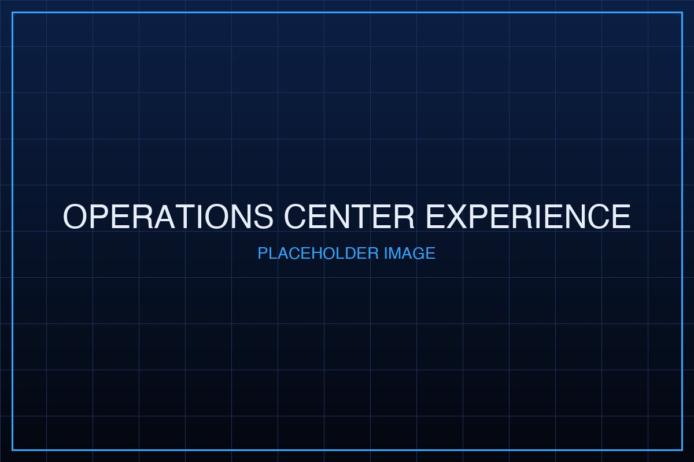

Tridenta
Track. Analyze. Predict. Respond.
TRIDENTA is an Enterprise-Grade Maritime Analytics, Monitoring & Decision Support System delivering:
Continuous Maritime Situation Overview
Unified view of maritime events, incidents, and operational activity.
AI Data Fusion Layer
Integrates multi-source data: narrative events, actors, chronology, and visual evidence.
Risk Forecasting & Incident Escalation Detection
Detect risk indicators early, assess escalation stage, and trigger alerts.
Decision Support for Management & Analysts
Supports strategic and operational insight, operational readiness, and management reporting.
TRIDENTA is built for:
- Port Authorities & Fleet Operators
- Coast Guard & Maritime Authorities
- Maritime Operations Centers
- Government Maritime Agencies
- Maritime Analysts & Operations Staff
Why Tridenta
Maritime operations are complex. Risks span multiple domains.
Today’s maritime environment is shaped by:
- Rising regional maritime tensions,
- Disputed sea lanes,
- Illegal fishing & transnational crime,
- Misinformation and narrative influence
Operations demand real-time situational awareness plus contextual insight to respond before situations escalate.
Core Value
Built for fast-paced maritime decision-making.
TRIDENTA strengthens operational execution by enabling:
- Faster interpretation of events and actor relationships
- Smarter insight extraction with GenAI & retrieval
- Validated outputs through retrieval testing & tuning controls
- Operational outputs ready for briefings, alerting, and incident response
Positioning Statement
TRIDENTA enables continuous maritime data fusion and early risk alerts by combining AI agents, semantic knowledge retrieval, vision-based evidence extraction, and interactive operations dashboards.
Capability Pillars
GenAI Knowledge Engineering & Retrieval
Transform maritime documents into an operational knowledge base.
- Text chunking and normalization
- Configurable delimiter for structured processing
- Knowledge embedding (vectorization)
- Index method selection (hybrid-ready)
- Retrieval evaluation environment (query simulation, ranking behavior)
- Retrieval parameter tuning: Top-K, threshold, rerank activation
Agentic AI for Maritime Workflows
Workflow automation without losing human control.
- AI Agents for complex tasks:
- task decomposition,
- logical reasoning,
- tool invocation and automation
- LLM Semantic Chains:
- multi-step dialogue,
- semantic search workflows,
- contextual insight generation
- Internal Knowledge Base support for reliable answers
Conversational Operations Interface
Operations center experience through AI interaction.
- Historical chat management
- Context-aware conversational sessions
- Interactive AI dashboard (chat + analytics)
- AI narrative responses for issues/events
- Auto visualization generation:
- line, bar, pie, area charts
Modules
A. Foundation: AI Maritime Decision Support (Core Stack)
1. GenAI System Integration – Foundation
- Text Pre-processing
- Embedding Knowledge
- Knowledge Retrieval Testing
- Retrieval Settings (Index/Model/Top-K/Rerank/Threshold)
2. LLM Operation & Internal Knowledge Base – Foundation
- AI Agents
- LLM Semantic Chains
3. Generative AI Software & Conversational Interface – Foundation
- Historical Chat Management
- Interactive AI Dashboard
B. Maritime Analytics Suite
1. International & National Maritime Event Dashboard
Map-based analytics dashboard showing event distribution and hotspots.
2. Country & Actor Relationship Analysis
- Relation analysis: country-to-country, actor-to-actor
- Tone assessment: positive / negative
- Issue summary and actors involved
- Relation category + sources
- Visual forms: map, relation table, sankey
3. Timeline & Chronology Analysis
Historical-to-current event storyline to support operational understanding.
4. Risk Analysis & Incident Alerting
- Risk scoring per issue/region/actor
- Escalation stage detection
- Risk identification: direct/indirect relevance
- Priority alert signals

Operations Center Experience
Unified Maritime Insight, Built for Operations
TRIDENTA is designed for multi-level use:
- Executive Overview Dashboard (one-screen maritime overview)
- Analyst Investigation Workspace (relation, timeline, risk)
- Map-first data exploration
- Automated analytical report generation
Designed for Trust & Accountability
- Traceable retrieval sources
- Retrieval test records
- Parameterized settings for governance and tuning
Use Cases
Where TRIDENTA is most effective:
- Maritime situational awareness and continuous monitoring
- Incident escalation monitoring & early alerts
- Cross-border maritime incident analysis
- Actor relationship analysis & regional context mapping
- Analyst reporting automation & briefing preparation
- Decision support for multi-agency maritime teams